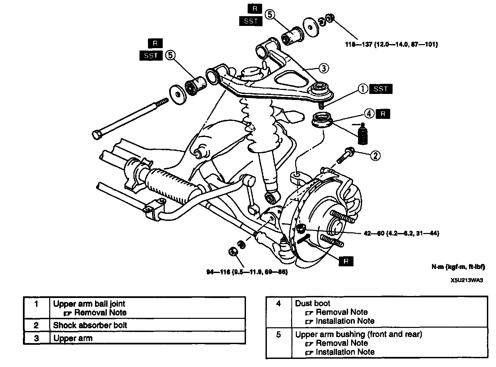
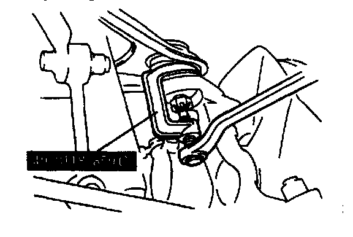
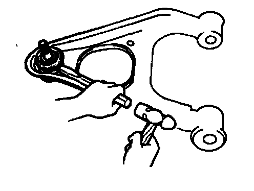
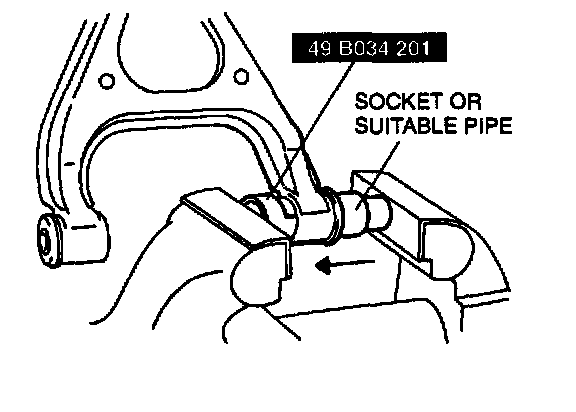
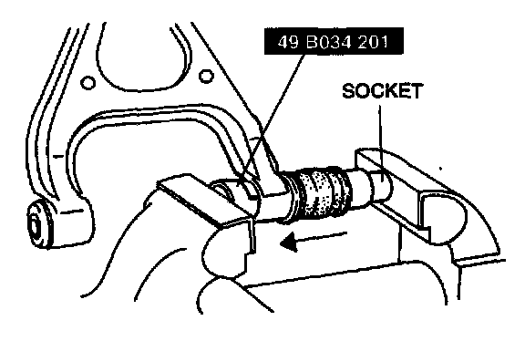
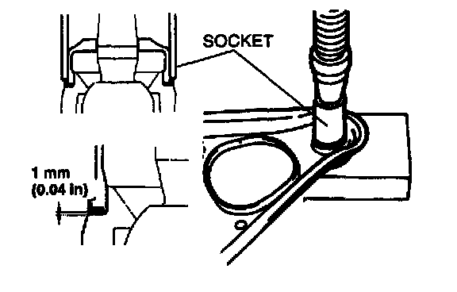
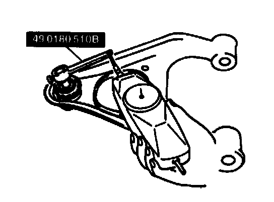

Front Upper Arm
REMOVAL/INSTALLATION
Caution:
- Performing the following procedures without first removing the ABS wheel-speed sensor may possibly cause an open circuit in the harness if it is pulled by mistake. Before performing the following procedures, remove the ABS wheel-speed sensor (axle side) and fix it to an appropriate place where the sensor will not be pulled by mistake while servicing the vehicle.
1. Remove in the order indicated in the table.
2. Install in the reverse order of removal.
3. Adjust the front wheel alignment.
Upper Arm Ball Joint Removal Note

- Separate the upper arm ball joint from the knuckle by using the SST.
Dust Boot Removal Note

- Carefully remove the dust boot by using a chisel.
Upper Arm Bushing (Front And Rear) Removal Note

- Press the upper arm bushing out by using the SST and a socket as shown.
Upper Arm Bushing (Front And Rear) Installation Note
1. Apply soapy water to the upper arm bushing.

2. Press the bushing in by using the SST and a socket in the direction of the arrow.
Dust Boot Installation Note
1. Liberally coat the inside of the new dust boot with grease.
2. Press the dust boot on by using a 30 mm (1 1/8 inch) socket until the dust boot contacts the seat.
Caution:
- Install the dust boot squarely and do not press excessively. The inner metal ring will be deformed if not done correctly.

3. Verify that the clearance between the boot and the seat is less than 1 mm (0.04 inch).
Front Upper Arm Inspection
1. Shake the ball joint stud 5 times.

2. Connect the SST to the ball stud, and measure the rotation torque by using a pull scale.
Rotation torque 0.3-2.2 Nm (2.8-23.4 kg-cm, 2.5-20.2 inch lbs.)
Pull scale reading 3.0-22.1 N (0.3-2.3 kg, 0.63-5.07 lbs.)